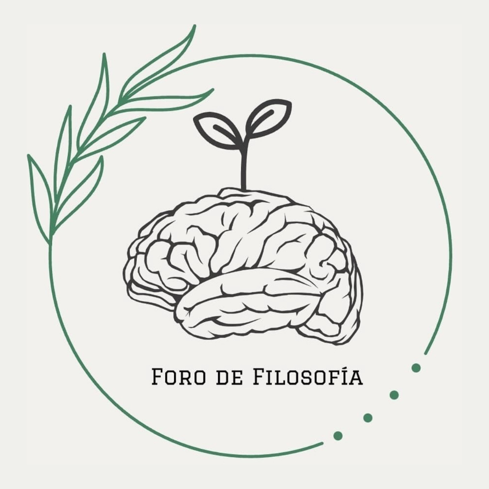

<ion-header [translucent]="true">
  <ion-toolbar>
    <ion-title>
      <h4>
      How to adult?
      </h4>
    </ion-title>
  </ion-toolbar>
  <!--  -->
</ion-header>

<ion-content [fullscreen]="true">

  <ion-refresher slot="fixed" (ionRefresh)="handleRefresh($event)" style="position:static;">
    <ion-refresher-content
      pullingIcon="chevron-down-circle-outline"
      pullingText="Pull to refresh"
      refreshingSpinner="circles"
      refreshingText="Refreshing..."
    >
    </ion-refresher-content>
  </ion-refresher>

  <ion-card class="quote" *ngIf="Quote.quote != ''">
    <ion-card-header>
      <ion-card-title>{{Quote.quote}}</ion-card-title>
      <ion-card-subtitle>{{Quote.source}}</ion-card-subtitle>
    </ion-card-header>
  </ion-card>

  <div *ngFor="let evento of cronograma">
    <ion-card
    *ngIf="evento.Show === true || preTime(evento.Hora.Inicio, evento.Hora.Fin)"
    (click)="details(evento)" 
    [ngClass]="time(evento.Hora.Inicio, evento.Hora.Fin)  ? 'active': 'inactive'">
      <ion-card-header>
        <ion-card-title>{{evento.Evento}}</ion-card-title>
        <ion-card-subtitle>{{evento.Hora.Inicio}} - {{evento.Hora.Fin}}</ion-card-subtitle>
      </ion-card-header>

      <ion-card-content>
        {{evento.Descripcion}}
      </ion-card-content>
    </ion-card>
  </div>
  
</ion-content>
